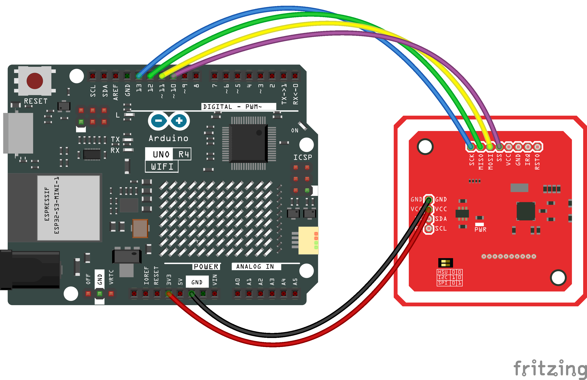
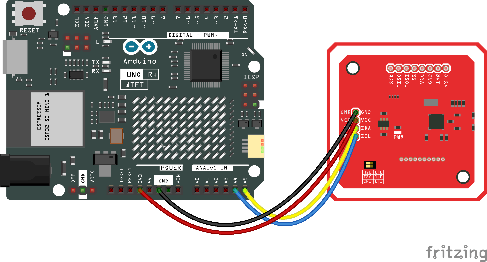

cryptnox-sdk-arduino
Arduino library for managing Cryptnox Hardware Wallet


cryptnox-sdk-arduino is an Arduino library that enables the use of the Cryptnox Hardware Wallet on Arduino UNO R4 platforms. It provides secure communication with the card, retrieves card information, and exposes basic cryptographic operations through the shared C++ core SDK.
Supported hardware
Cryptnox Hardware Wallet
Works with Cryptnox Hardware Wallet running firmware v1.6.0 or later.
NFC readers
Host board
Installation
- Important
- The library cannot be installed from the Arduino Library Manager alone: it depends on patched versions of AESLib, Adafruit_PN532, and on Renesas-core memory optimisations without which sketches will either fail to compile or overflow flash on the UNO R4. The setup.bat installer below applies all of these automatically.
Prerequisites
- Install Arduino IDE 2.x.
- Add the Arduino UNO R4 board support package: Tools → Board → Boards Manager → search for Arduino UNO R4 Boards → Install.
- Install git and make sure it is in PATH.
Install (Windows — setup.bat)
git clone --recurse-submodules https://github.com/cryptnox/cryptnox-sdk-arduino.git
cd cryptnox-sdk-arduino
setup.bat
setup.bat performs every step the library needs to compile and run:
- backs up the current Arduino\libraries folder (sibling directory, timestamped),
- copies the SDK into libraries\CryptnoxWallet,
- clones each pinned third-party dependency (AESLib, Adafruit_BusIO, Adafruit_PN532, ArduinoHttpClient, Crypto, micro-ecc, trng),
- applies the patches from patches\ — required, not optional:
- AESLib_renesas.patch (compile on the Renesas core),
- AESLib_no_iostream.patch (≈ 145 KB flash saved),
- Adafruit_PN532_timeout.patch (longer card-detection window),
- Adafruit_PN532_extended_frame.patch (extended-frame APDU support so certificate pages > 255 bytes deliver intact),
- runs scripts\enable_memory_optimization.bat to strip the AVR-compat float-printf hard pull and add -fno-exceptions -fno-rtti + uECC curve trimming to the core (≈ 11 KB more flash saved).
Pass --reset to wipe Arduino\libraries after the backup. Pass a path as the first argument to target a non-default libraries directory.
When the script finishes, restart the Arduino IDE, then open File → Examples → CryptnoxWallet → Connect, select your board (Tools → Board → Arduino UNO R4 Minima or WiFi), pick the serial port, and Upload.
Hardware setup
- Attention
- Always double-check the wiring before powering the Arduino to prevent damage.
Wiring shown for the Arduino UNO R4 WiFi (identical pin numbering on the Minima variant).
Arduino UNO R4 and PN532 NFC — SPI interface
| PN532 Pin | Arduino Pin | Wire Color |
| VCC | 3.3V | Red |
| GND | GND | Black |
| SCK | D13 | Blue |
| MISO | D12 | Green |
| MOSI | D11 | Yellow |
| SS | D10 | Violet |
- Important
- Make sure the switches on the PN532 module are configured for SPI mode:
- Switch 0 → HIGH
- Switch 1 → LOW

Arduino UNO R4 and PN532 NFC — I²C interface
| PN532 Pin | Arduino Pin | Wire Color |
| VCC | 3.3V | Red |
| GND | GND | Black |
| SDA | A4 | Yellow |
| SCL | A5 | Blue |
- Important
- Make sure the switches on the PN532 module are configured for I²C mode:
- Switch 0 → LOW
- Switch 1 → HIGH

Quick usage examples
Full sketches live under examples/. Each one is also visible from the Arduino IDE under File → Examples → CryptnoxWallet. The snippets below show the interesting part — see the linked .ino for the complete file (setup, error handling, comments).
1. Connect & read card info — Connect.ino
#include <CryptnoxWallet.h>
#include <SPI.h>
SPI.begin();
while (1);
}
}
if (
wallet.connect(session)) {
serialAdapter.println(
F(
"Card connected, secure channel established"));
if (
wallet.getCardInfo(session, &info)) {
} else {
serialAdapter.println(
F(
"getCardInfo failed (channel error or parse error)"));
}
} else {
serialAdapter.println(
F(
"Card not detected or secure channel failed"));
}
delay(1000);
}
void setup()
Arduino setup function.
CryptnoxWallet wallet(nfc, serialAdapter, cryptoProvider, platform)
PN532Adapter nfc(serialAdapter, PN532_SS, &SPI)
ArduinoLoggerAdapter serialAdapter
ArduinoCryptoProvider cryptoProvider
void loop()
Arduino main loop.
CW_CryptoProvider implementation for the Arduino UNO R4 (RA4M1).
CW_Logger implementation wrapping Arduino's HardwareSerial.
High-level interface for interacting with a Cryptnox Hardware Wallet over NFC.
CW_NfcTransport implementation over the Adafruit_PN532 driver.
Subset of the Cryptnox card info returned by APDU 0x80FA0000.
char name[CW_CARD_NAME_MAX_LEN+1U]
char email[CW_CARD_EMAIL_MAX_LEN+1U]
Holds cryptographic session state for reentrant secure channel operations.
const char* pin = "000000000";
if (!
wallet.verifyPin(session,
reinterpret_cast<const uint8_t*>(pin),
(uint8_t)strlen(pin))) {
serialAdapter.println(
F(
"Wrong PIN — halting to protect retry counter"));
while (1);
}
3. Sign a 32-byte hash — Sign.ino
memset(hash, 0x01, sizeof(hash));
req.hash = hash;
req.hashLength = sizeof(hash);
reinterpret_cast<const uint8_t*>("000000000"), 9U);
}
#define CW_SIGN_SIG_ECDSA_LOW_S
static bool safe_memcpy(uint8_t *dst, size_t dstSize, const uint8_t *src, size_t count)
Safe memcpy — validates pointers, sizes, and checks for overlap.
static void secure_wipe(uint8_t *buf, size_t len)
Securely zero a buffer, guaranteed not to be optimised away.
Request parameters for CryptnoxWallet::sign.
Result of CryptnoxWallet::sign.
uint8_t signature[CW_RAW_SIGNATURE_SIZE]
For a full end-to-end real-world flow (WiFi + JSON-RPC + EIP-1559 tx), see examples/UsdcSigning/ which signs and broadcasts a USDC transfer on Sepolia.
- Note
- The card must have a seed loaded before signing will work. The easiest way to provision it is with the Cryptnox CLI:
cryptnox init
cryptnox seed generate
- Warning
- The PIN "000000000" is a demo placeholder. Set a strong PIN when initialising the card, change any factory default before storing real funds, and never commit source files containing a real PIN.
Troubleshooting
- The library doesn't appear in the Arduino IDE → restart the IDE after installation.
- The PN532 is not detected → check the wiring and the switch configuration (SPI vs I²C). They must match the interface defined in your sketch (USE_SPI or USE_I2C).
- Upload fails → verify that the correct board (Arduino UNO R4 Minima / WiFi) and the correct port are selected in the Tools menu.
- Sign failed with a non-zero error code → the card may not have a seed loaded. Provision it once with the Cryptnox CLI.
Documentation
The generated documentation for this project is available here.
Contributing
Contributions are welcome! See CONTRIBUTING.md for how to propose changes, and DEVELOPMENT.md for the development setup.
License
cryptnox-sdk-arduino is dual-licensed:
- LGPL-3.0 for open-source projects and proprietary projects that comply with LGPL requirements
- Commercial license for projects that require a proprietary license without LGPL obligations (see COMMERCIAL.md for details)
For commercial inquiries, contact: conta.nosp@m.ct@c.nosp@m.ryptn.nosp@m.ox.c.nosp@m.om